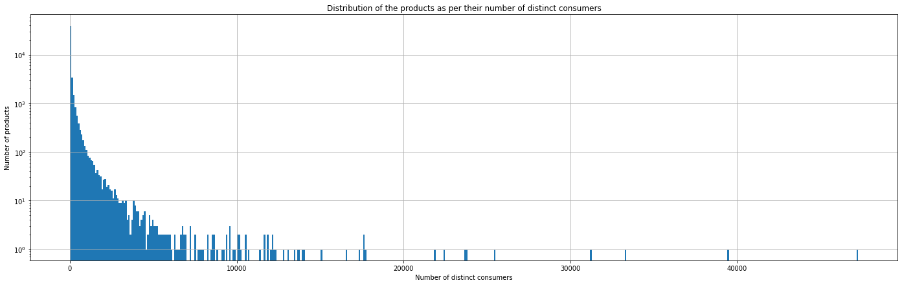
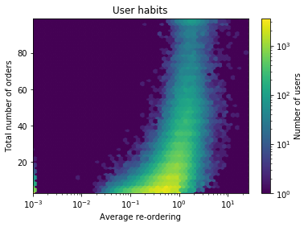
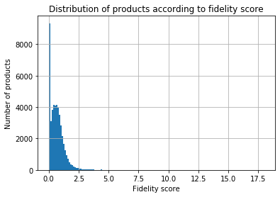
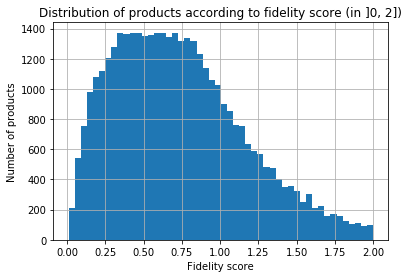
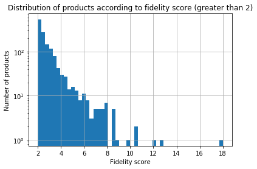
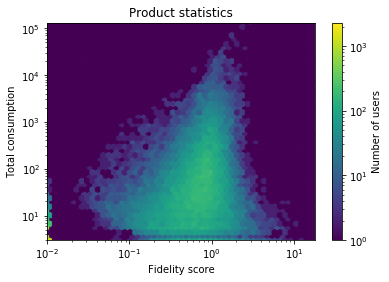

Photography of an Addax (Addax nasomaculatus) at the Louisville Zoo, eating healthy grass. Source here
The study of consumption habits is a very hot topic, as it can be very useful for marketing issues, or advertisement. However, our goal here is to use data in order to help consumers directly. Through an analysis of the Instacart dataset, we aim to give the reader some advices regarding consumption to reorient clients’ habits toward a healthier way of life. All in all, we provide the first steps of a smooth transition to a more responsible consumption.
Instacart is a famous american company that provides an online shopping service. They made their real data for year 2017 publicly available. This dataset consists in 4 different tables with data regarding the orders, the products and some categorization of the products. It also contains one dataset retracing the history of orders per product and per client, see here for more details.
Exploring such a big dataset is a challenge, and you definitely need a strategy to dive into it. We thus chose to answer the following questions as guidelines:
Ready? Let's dive !
Before answering the previously defined questions, let's have a look at meaningful general insights on the dataset. Such insights provide a good overview on users' habits.
As could be expected, people tend to order during working hours (between 8 a.m. and 20 p.m.), and during the weekend.
Most of the consumers only order 4 times. None of them order less : we concluded that we were provided with a dataset containing only part of the user data, excluding too few faithful ones.
A large range of products can be found in the Instacart dataset. The classification into departments (further divided in aisles) makes possible the identification of similar products.
These first considerations being inferred, let's now move to the more interesting problem of users clustering.
We wanted to classify consumers depending on the categories of products they buy, to define a cluster of healthy consumers. It is a tremendous challenge, as there is no available metrics to quantify the healthiness of a product in the Instacart dataset. The risk is that a direct clustering on all available features won't differentiate between healthy and unhealthy consuming users, but rather between other criteria (consumers eating more salty or sweet for instance).
Thus, we first hand-selected 14 aisles that were directly linked to healthiness. Then, we applied a Principal Component Analysis, to reduce the numbers of features to cluster on. The aisles accounting the most for the 4 first principal dimensions were all differential in terms of healthiness. More precisely, the first three dimensions were respectively led by "fresh fruits", "fresh vegetables" and "packaged vegetables fruits", considered to be healthy. The 4th dimension was led by "soft drinks", more related to unhealthiness. We thus chose to cluster on these 4 dimensions.
The previous representation shows clusters projected in the first two dimensions of the PCA. The three clusters are well defined, not overlapping, but the separation seems somehow artificially made. This is most likely due to a difficulty to really differentiate the users, because of the continuum in their habits.
Still, we can see tendancies emerging from the clustering, as reported below.
This table shows the product aisles having the highest Chi-2 significance after clustering. As expected after PCA, consumption of fresh fruits and vegetables are really meaningful. Then the comsumption of soft drinks and frozen meals charcaterize unhealthy users.
Looking more precisely at the individual features of our three clusters enabled us to rank them in terms of healthiness. The most healthy one (referred to as cluster 2, purple above) is characterized by a high consumption of vegetables and herbs. It may indeed indicate a range of people taking the time to cook instead of eating already prepared meals.
The second most healthy one (referred to as cluster 1, green above) is characterized by a high consumption of fruits.
The less healthy one (referred to as cluster 0, yellow above) is characterized by a high consumption of soft drinks, bakings, snacks and candies.
We wanted to know whether different trends existed between clusters in terms of ordering habits : purchase day of the week and hours, time between two orders, etc. Our goal was to identify good practices that could be advised to the cluster of people eating a less healthy way. For instance, less time between two orders (indicating less meal planning) could have been associated with unhealthy consumption. However, there is no meaningful difference between clusters in terms of ordering habits and no good practice was inferrable.
Even if we didn't manage to identify good ordering practices, we have now 3 well-defined clusters, ranked in terms of healthiness. It is thus possible to rely on these clusters to characterize the healthiness of products individually and recommend better products to consumers. We can define the healthiness of a product as a function of the distribution (in terms of clusters) of people who consumed this product.
For instance, if a "healthy" user consumes a certain product, it gives 4 points to this product. An "average" consumer would give 1 point, while an "unhealthy" consumer would remove 1 point to the product. Then, it is easy to adapt this (arbitrary) scores making a weighted average taking the number of consumptions into account. The bigger the score, the healthier the product. In particular, if a product has a score of -1, it means that it's only consumed by people of the unhealthy cluster, and a product rated 4 is only conumed by people of the healthy cluster.
Defined so, the healthiness score may however be irrelevant when a product is only consumed by very few people, because it induces a great variance in score evaluation. To deal with this limitation, we chose to also take into account a product's popularity by deriving an Popularity score for each product.
A first way to quantify such a popularity is to look at the number of distinct consumers ordering a product.
Some products have been consumed by very few people, sometimes 0, so we have no (reliable) information about their scores. A quick exploration of these products show that they are not products we would advise, because they are too specific. Our decision for these products is to give them a score of 0.
To gauge the popularity of a product, we chose to infer from our dataset the average number of times it is re-bought. Nevertheless, this raw score would not be meaningful enough and we have to take the consumer's consumption habits into account, as shown by the following example:
Imagine a consumer, Ada, buying everytime the same set of products, each of them 10 times, except one product, let's say "chicory and ham", which wasn't so good, and she bought it only 4 times. Now imagine a second consumer Robert, who doesn't like consuming always the same products, and tries to have a very varied consumption. He bought once each product, except one, say "goat cheese", which he loved and bought 3 times. If Ada and Robert are the only consumers of the dataset, "chicory and ham" would have a better popularity score (that is 4) than "goat cheese" (score of 3). We don't want this to happen!
Thus, we first have to study carefully users' re-ordering habits!
Most of the users consume on average less than one time a product. We observe big peaks at 0, 1/2, 1 and 2, which must correspond to users who consumed rarely. A further result is that consumers who reorder the most on average are among the greatest consumers, as shown by the graph below.
Most of the users only ordered a few times, and small above a certain number of orders. The average re-ordering can't be too low, which can be explained by the fact that people who buy so much have strong consumption habits.
As a final metrics for the popularity score, we thus still considered the re-ordering rate, but chose to normalize by the average fidelity of each user (the average time he or she consumes each product). The greater this score is, the more the product is likely to be re-bought. The absolute value of the score is difficult to interpret, but we can compare different scores quite safely.
Once defined, let's look at the distribution of the popularity score.
  We observe that most of the values (whose weighted average over consumptions should be one !) are in the interval [0, 2] with a great peak at 0. Let's confront those values to the reliability of each score, that corresponds to the number of times the product was bought.
We can't see a very clear correlation. Nevertheless, we can remark 2 things.
We now have, for each product, two scores : a healthiness score and a popularity score. Based on these two, we now aim to recommend "better products" to users.
We want to recommend "healthier" products to users whom we consider as having a rather unhealthy consumption habits. To do this, we made for each aisle a graph of products where two products that are bought by the same users are connected by an edge of low weight: the lower the weight, the more users buy both products (and the more they buy each product). Then, we hope that two products that are connected by a low-weight edge are appreciated by the same users and share some characteristis. Thus, it should make sense to recommend, instead of a product deemed "unhealthy", a product of the same aisle and with a very short path from the "unhealthy" product.
As could be expected, people tend to order during working hours (between 8 a.m. and 20 p.m.), and during the weekend.
Most of the consumers only order 4 times. None of them order less : we concluded that we were provided with a dataset containing only part of the user data, excluding too few faithful ones.
A large range of products can be found in the Instacart dataset. The classification into departments (further divided in aisles) makes possible the identification of similar products.
These first considerations being inferred, let's now move to the more interesting problem of users clustering.
{kind=link}